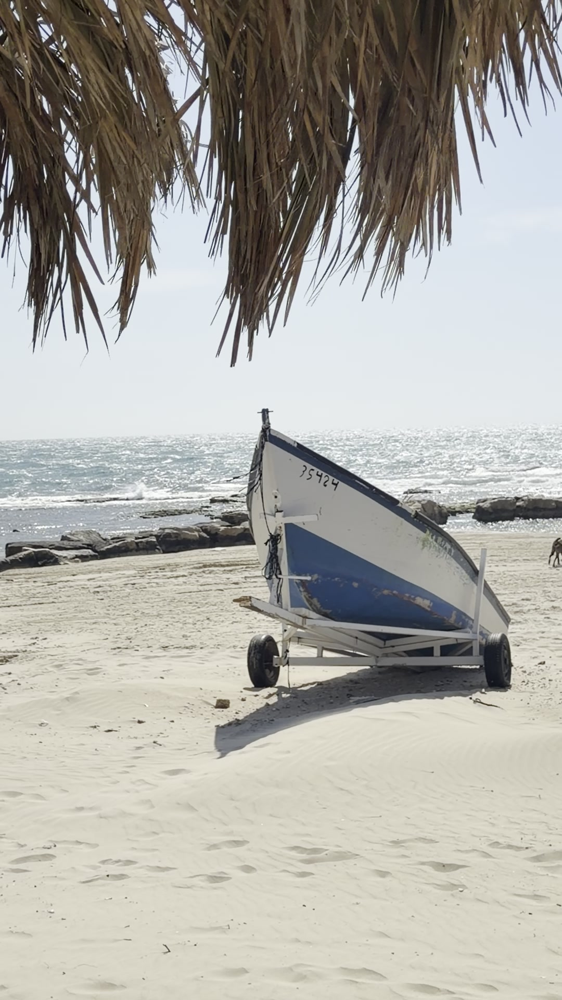
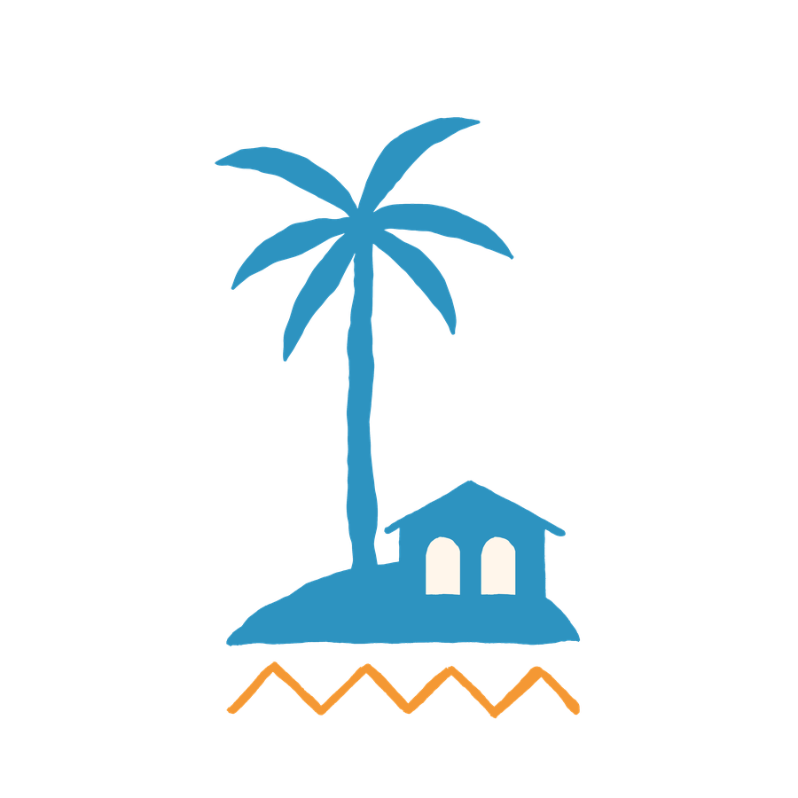
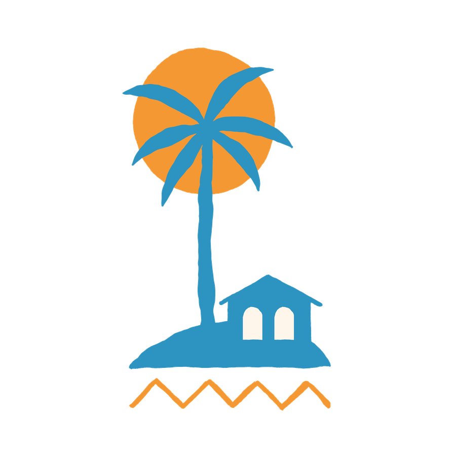
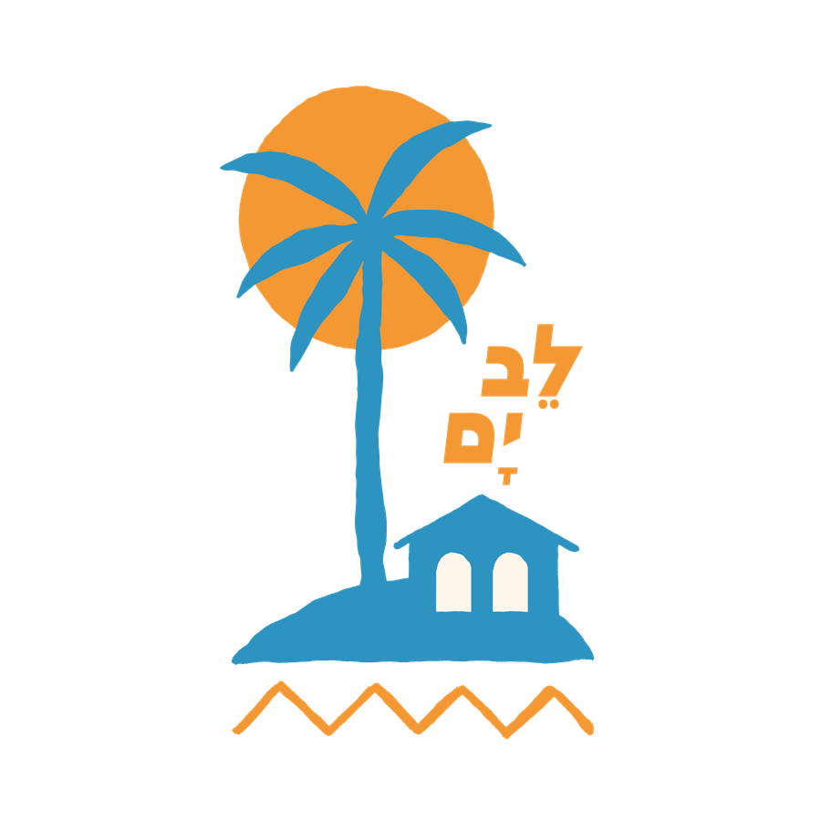
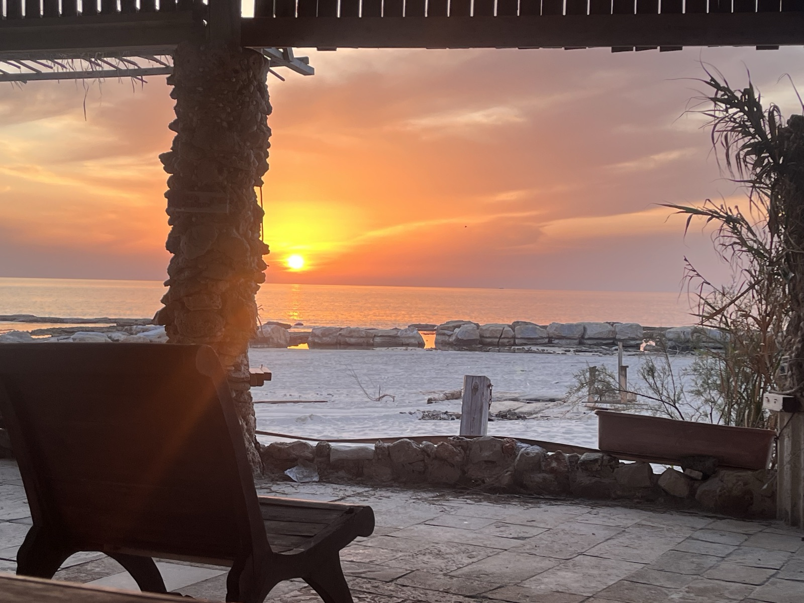
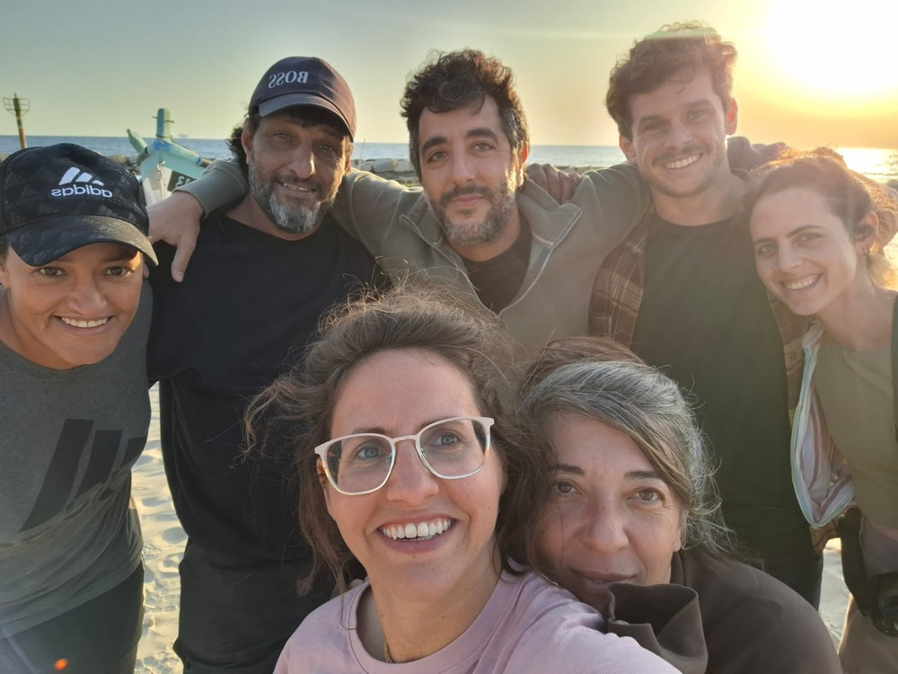

המקום שבו הלב פוגש את הים
מרחב פתוח על קו המים - לעבודה, מפגש, יצירה ומנוחה.
על קו המים של כפר הדייגים הקסום, האחרון מסוגו בישראל, הקמנו את לב ים - מרחב ליזמות עסקית חברתית המבוסס על שותפות, פשטות וקבלה.
מה קורה בלב ים
אל מול נוף עוצר נשימה, ליד הדייגים - בתוך הכפר, קורים הדברים הכי טובים



יום ראשון לקהילה
מדי יום ראשון - יזמים ויוצרים מתכנסים לפתוח יחד את השבוע - לעבוד, לשוחח ולהתחבר.
הצטרפו ליום הקהילה
למה לב ים
מעטים המקומות שמעניקים את התחושה שהם כמו נבראו מסיבה מסוימת.
רצועת חוף בתולית, מבנה דייגים עתיק, שקט, שלווה, אנשים לבביים — זה רק חלק מהקסם של לב ים בכפר הדייגים ג׳יסר א-זרקא.
לב ים לא ״ממוקם״ בג׳יסר, אלא פועל מתוכה ובשבילה. לא כרקע — אלא כשותפה. הרגע הזה של שקט עבורכם, לטובת התארגנות מחדש — מקדם חזון של חיבור אנושי חיובי ושגשוג משותף, ומבטיח שהלב ימשיך לפעום ולהדהד גם הרחק מעבר לקו המים.
על ג׳יסר א-זרקא וכפר הדייגים
ג׳יסר א-זרקא הוא הכפר הערבי-מוסלמי היחיד שנותר על קו החוף הישראלי, בלב רצועת חוף הכרמל. הפארק הלאומי, כפר הדייגים, בו ממוקם לב ים שומר על אופי ייחודי - סירות עץ, רשתות, ריח של ים והיסטוריה משפחתית.
כל ביקור כאן הוא גם מפגש עם מקום, עם אנשים, ועם סיפור.
גלריה
רגעים מלב ים
שאלות ותשובות
איך מגיעים ללב ים?
ג׳יסר א-זרקא נגישה ברכב מכביש 4, כשעה מתל אביב וכ-25 דקות מחיפה. בירידה בכפר לכיוון הים מגיעים לכפר הדייגים. יש חניה מסודרת בכניסה. הכי פשוט, שימו בוויז לב ים ותמצאו אותנו.
כמה אנשים יכולים להגיע?
המתחם מתאים לקבוצות של עד כ-50 איש לאירועי ישיבה, ואף יכול להתאים לקבוצות גדולות יותר בהתאם לאופי האירוע שלכם.
מה כלול במתחם ומה לגבי אוכל?
פינות ישיבה מגוונות, מטבח מאובזר, כלי מטבח והגשה, אינטרנט מהיר, טלוויזיה גדולה להקרנה, מדשאה מפנקת, מקלחות, שירותים וכלי עבודה. אפשר גם להזמין ארוחה מלאה, פינוקים בין הישיבות, או ארוחת ערב חגיגית — נשמח להתאים לכם את החוויה המושלמת.
האם המקום מתאים למשפחות ובטוח להגיע?
בהחלט. ג׳יסר א-זרקא היא כפר ערבי-מוסלמי שקט ומסביר פנים, שביל ישראל עובר לאורכו וכפר הדייגים הוא פארק לאומי רשמי. החוף נגיש ובטוח, יש מרחב פתוח לילדים לרוץ בו, ובאירועים פרטיים אפשר לתאם פעילות מותאמת.
האם אפשר לשכור את המתחם לכל היום?
בהחלט. אפשר לשכור את המתחם כולו ליום, לסוף שבוע, או לתקופה ארוכה יותר — לסדנה, לריטריט או לאירוע פרטי. לא קיימת אפשרות לינה.
מה לוח הזמנים של ימי הקהילה?
ימי הקהילה מתקיימים בימי ראשון. כל הפרטים עוברים בקבוצת הוואטסאפ של חבורת לב ים. במידה ואתם מעוניינים לקחת חלק תפנו אלינו.
איך אני מזמין?
הדרך הכי פשוטה — שלחו לנו הודעת וואטסאפ עם כמה פרטים על מה שאתם מחפשים, ונחזור אליכם בהקדם.
דברו איתנו
יש דברים שצריך לחוות כדי להבין - בואו לבקר בלב ים.
מה תרצו לעשות?